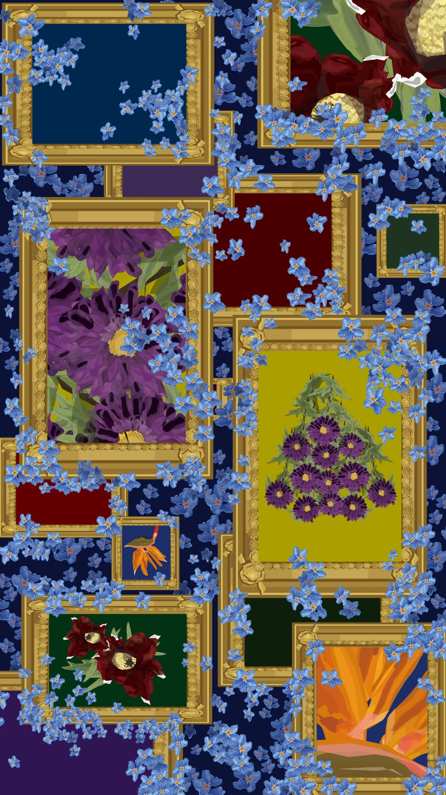

作品のポイント
目次
花言葉一覧
この作品では、それぞれの花が持つ花言葉を通して、 人との出会いや別れによって生まれた感情を表現しています。
- ワスレバナ
- 翁草
- アスクー
- ストレリチア
- 水仙
作品紹介

本作品は、「自分とは何か」を表現したポートレート作品です。 改めて自分自身を振り返る中で、私は人との別れの感情に強く影響を受ける人間なのだと気づきました。 人との出会いと別れを通して抱いた感情を、花言葉を用いて表現しています。 醜く汚いと蓋をしたくなる感情も、自分だけは「美しいもの」として飾っていたい。 そんな想いを込めて制作しました。
コンセプト
この作品では、「感情も自分を形づくる大切な一部である」という考えをテーマにしました。 人との出会いや別れの中で生まれる様々な感情を、花言葉という形に置き換えて表現しています。
花は美しさだけでなく、それぞれ異なる意味を持っています。 その花言葉を用いることで、自分自身の心の変化や成長を視覚的に伝えられるよう工夫しました。
また、作品全体を落ち着いた色合いでまとめることで、 優しさと少し切ない雰囲気を感じられるようデザインしています。